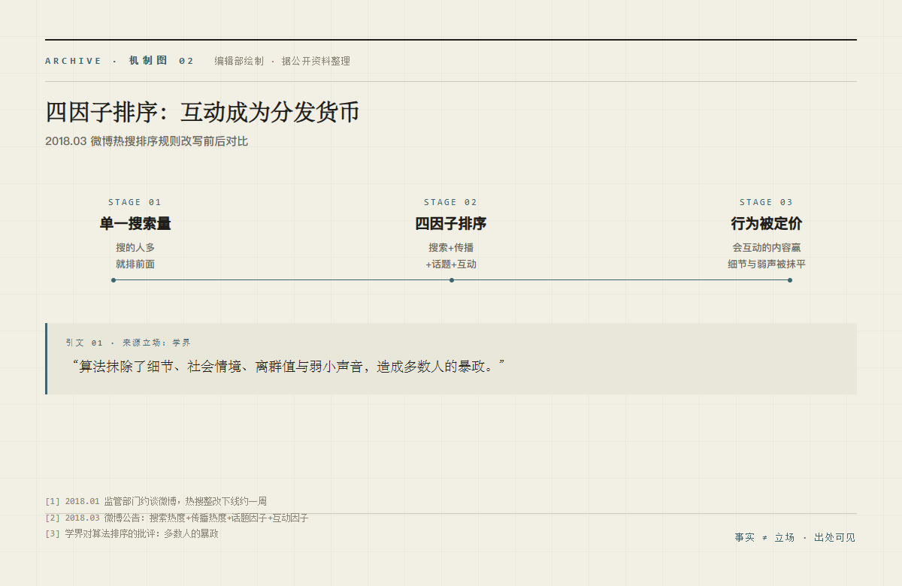

2018，互动被写进了权重
产生期观察 · 之二 · 范围：2018.01–03 监管约谈、热搜下线与四因子排序。本篇不涉及具体性别事件。
这一篇看的是产生期的第二块地基。上一篇讲 2016 年「情绪换流量」被验证，本篇讲它如何在 2018 年被制度化——写进热搜的排序算法。这是本专题里少数几个有明确日期的机制节点：一次监管约谈、一次榜单下线、一纸规则公告，把「互动」从传播现象变成了分发货币。此后所有关于「谁有叙事权」的争夺，都发生在这套定价系统里。
先把时间线摆清楚，事实与评价分开。以下日期与规则内容来自监管公开通报与平台公告[1][2]，评价部分单独标注。
2018 年 1 月，监管部门就热搜榜乱象约谈微博，指出榜单存在低俗炒作、导向偏差等问题；随后热搜产品整改下线约一周，重新上线时附加了「新时代」等导向入口[1]。真正的机制变化发生在同年 3 月：微博公告调整热搜排序规则，从单一的搜索量指标，改为「搜索热度 + 传播热度 + 话题因子 + 互动因子」四因子综合排序[2]。
这次改写的官方动机是治理：引入多因子、削弱刷榜的可操纵性，方向上是对「谁砸钱谁上榜」的约束。动机层面无须苛责。但规则的客观后果与动机是两件事——四因子中，传播热度、话题因子、互动因子三项都直接或间接由用户互动行为定义。也就是说：一篇内容能不能被更多人看见，不再只取决于「多少人想知道」（搜索），而开始取决于「多少人愿意动手表态」（互动）。互动量、互动增速、话题聚合度，从此有了明确的分发溢价。
用一句话概括制度含义：表达立场的行为本身，成了立场可见度的定价依据。沉默的阅读者在旧规则里尚能通过「搜索」投票，在新规则里权重被稀释——你不评不转，你关心的事就更难浮上来。
对这类排序算法的批评，在学术讨论里有一个凝练的说法：「多数人的暴政」。当分发完全向高频互动倾斜，算法会系统性地抹除细节、社会情境、离群值与弱小声音——因为这些东西天然互动低。不是它们不存在，是它们在统计上不可见[3]。一个需要三段前提才能讲清的判断，跑不过一句能点起情绪的断言；这不是受众的错，是两种内容在同一套定价系统里根本不在一个赛道上。
引文 01 · 来源立场：学界
"算法抹除了细节、社会情境、离群值与弱小声音，造成一种多数人的暴政。"
—— 关于算法排序公共性的学术批评综述（转述自传播学界对平台算法的通行批评，详见注 [3]）。立场：学界，非平台方。

▲ 图 02：四因子排序：互动成为分发货币 · 编辑部绘制。规则内容见注 [2]。
为什么一个社会学观察专题要从排序算法讲起？因为「男性叙事逐步丧失解释权」这个命题，如果只从性别观念找原因，会立刻陷入互相指控的泥潭。换到机制层就清楚得多：当公共可见度由互动定价，任何不擅长或不屑于情绪化互动的表达方式，都会被系统性低估。传统意义上的「讲道理」——列事实、给前提、留余地——恰恰是互动率最低的表达方式之一。它输给的不是某个群体，是一套分发规则。
同时必须补一句对称的话：这套规则对所有群体一视同仁地残酷。女性在另一些议题里同样被这套规则伤害过（被误解、被断章、被流量围剿），机制不针对性别，机制只认互动量。本专题观察的「某一类视角丧失解释权」，是这套机制在特定议题结构下的净效应，不是平台的主观意图。把平台当替罪羊，恰恰是本专题要拆的动作之一。
于是产生期的两个条件就齐了：2016 年验证了情绪能换流量，2018 年把兑换率写进了算法。第三块地基不在平台，在文本——当「受害者自述」演变成一种可复制的文体，事实陈列在传播上就彻底失去了优势。下一篇讲小作文。
注 · SOURCES
[1] 2018.01 监管部门约谈微博热搜相关通报，热搜整改下线约一周后重新上线。据监管公开信息与公开报道。
[2] 2018.03 微博热搜排序规则公告：搜索热度 + 传播热度 + 话题因子 + 互动因子。平台公告，规则细节以平台后续调整为准。
[3] 传播学界对算法分发「多数人的暴政」的批评，系对算法排序公共性讨论的综述性转述，非单一文献原文逐字引用；同类论述可见多篇中英文传播学研究。
[4] 「互动定价对表达方式的系统性低估」为本文基于规则结构的机制推论，属分析性判断，非实证统计结论。
口径说明
本文为社会学观察，不站任何性别立场，作者性别不作为论证依据。事实据公开来源，观点归属已标注；涉及未证实指控不转述、不评价。拆解机制是为了理解，不是行动指南。
出口：互动定价的规则短期内不会取消，值得讨论的是它的可解释性——平台能不能公开「一条内容为什么被推给这些人」的粗颗粒说明，让分发从黑箱变成可质询的对象。这是比「算法向善」更具体、也更可谈的一步。